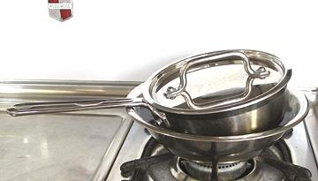

Double Boiler / Bain Marie
- A Double Boiler is a pan that has rapidly simmering water
below the level of the pan and is surrounded and heated by steam. It
is often used for making delicate sauces, especially those containing
egg yolks, but is also used for melting chocolate, making candy,
making candles, etc. It is a stovetop device, and the contents is often
stirred continuously or at least often.
- A Bain Marie is a water bath, with hot water surrounding the
pan the sauce (or whatever) is in. This technique is most often used
in the oven, especially for custards and the like where a bunch of
ramekins of custard are cooked in a shallow pan of water. It is also
sometimes use on the stovetop.
Whether you need such a device depends entirely on what kind of
cooking you do - it may be essential, or useless. With a double boiler,
you can make delicate sauces with confidence, and with less attention
than would be required directly on the burner. They are also used for
melting chocolate, making candy, and other tasks.
More on Kitchen Gear.
Double Boiler
This is my lovely copper and ceramic double boiler. I don't know where I
got it, or when, but I'm sure I didn't pay retail for it. The ceramic pan
holds 8 cups, which is sufficient to make 6 cups of sauce. It is heavy
and a bit too big for what I'm usually doing, so it gets very little
use. Most commercial double boilers sold today are all stainless steel,
which is more practical. Multi-ply is a waste of money, because the bottom pan will
be doing nothing but simmering water, and the top pan is evenly bathed
in steam.
The lid is often little used while making sauces, because most sauces
that need a double boiler require almost constant stirring, but the lid
will help keep the sauce warm when it's done, and keep the surface
moist.
Double Boiler Insert
These are popular for making small amounts of sauces, melting chocolate,
making candy, and making candles. Most hold 2 cups, but this 600 ml one
holds about 2-1/3 cups. A lid is not provided, but the lower pan's lid
can serve if a tight seal isn't needed, like keeping it warm for a few
minutes. This one was purchased from Amazon for 2020 US $10.86.
Jury Rig Stovetop Bain Marie

This is what I'm much more
likely to be using. I threw this together to make a cup and a half of
Polish White Lemon Sauce, which is very much like a Greek sauce, with
lemon juice and thickened with egg yolks. The egg yolks will curdle
if they hit a simmer. The Windsor Pan being tilted looks rinky dink,
but is actually an advantage, as the pan barely touches the mixing bowl
and is totally wrapped in water.
I did most of the cooking in the Windsor Pan directly on the burner.
When I was ready to finish it with the egg yolks, I just put a mixing
bowl with water under it, stirred in the egg yolks, and brought the
sauce up to a nice 180 °F over low heat, stirring often, but not
constantly.
Jury Rig Double Boiler
Here we have a more
formal arrangement, and a true double boiler. It's just a stainless
mixing bowl set in the top of a large saucepan. It would be better if
the bowl fit more snuggly, but I didn't have a pan and bowl that fit
better. Again, the lid is not much used when making the sauce, but
a good thing for keeping it warm and moist once it's done.
More on Kitchen Gear.
kp_dubboil 151221 - www.clovegarden.com
©Andrew Grygus - agryg@clovegaden.com
Photos on this
page not otherwise credited are © cg1 -
Linking to and non-commercial use of this page permitted